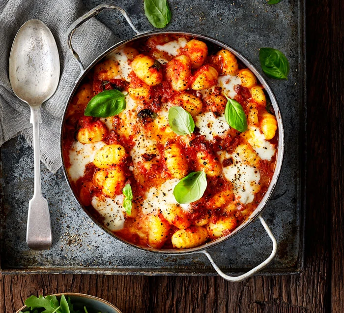

Go Back
Chorizo & Mozzarella Gnocchi Bake
CHECK OUT AMAZING PICTURE BELOW

Ingredients
- 1 tbsp olive oil
- 1 onion, finely chopped
- 2 garlic cloves, crushed
- 120g chorizo, diced
- 2 x 400g cans chopped tomatoes
- 1 tsp caster sugar
- 600g fresh gnocchi
- 125g mozzarella ball, cut into chunks
- Small bunch of basil, torn
- Green salad, to serve
Steps
- Heat the oil in a medium pan over medium heat and fry the onion and garlic for 8-10 mins until soft.
- Add the chorizo and fry for 5 mins more until it releases its oils.
- Tip in the tomatoes and sugar, season to taste, and bring to a simmer.
- Add the gnocchi and cook in the sauce for 8 mins, stirring often, until soft.
- Heat the grill to high.
- Stir three-quarters of the mozzarella and most of the basil through the gnocchi.
- Transfer the mixture into a baking dish or six ovenproof ramekins.
- Top with the remaining mozzarella and grill for 3 mins until the cheese is melted and golden.
- Scatter over the remaining basil and serve with a green salad.
ENJOY YOUR MEAL
Contact Author on Discord@username: udu_simeon
Have a great day!
Go Back To Homepage